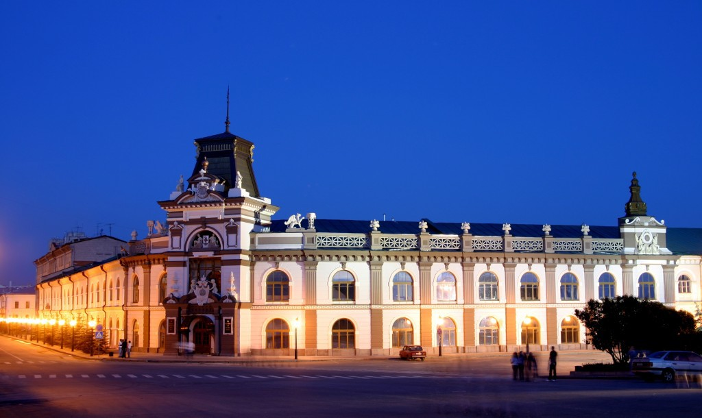

Que faire à Kazan ?
-

Kremlin de Kazan
Center of the city
Kremlin historique du Tatarstan
Construit sous les ordres d'Ivan IV, sur les ruines de l'ancien château des khans de Kazan. Il est inscrit sur la liste du patrimoine mondial de l'UNESCO. Organisation des Nations unies pour l'Éducation, la Science et la Culture
-

Mosquée Qolsharif
Center of the city
La renaissance ottomane
La mosquée Qolşärif est un édifice religieux du kremlin de la ville de Kazan en Russie. Elle était la plus grande mosquée d'Europe après celle d'Istanbul.
-

Temple of All Religions
West of the city
Temple, mosquée, synagogue,...
Le temple de toutes les religions est un complexe unique comprenant plusieurs types d'architecture religieuse.
-

Bauman Street
Center of the city
Nikolay Bauman, révolutionnaire
La Rue Baumana est une rue piétonne située au cœur de Kazan. La rue commence au pied du Kremlin et atteint la place Tukay, la place centrale de la ville.
-
Riviera Aquapark
Center of the city
Le pouvoir magique et curatif de l'eau
L'un des plus grands au monde! Plus de 50 attractions différentes pour que chacun puisse trouver sa véritable vague d'émotions !
-

Cathédrale de l'Annonciation
South of the city
Architecture orthodoxe russe
Annexée au kremlin, c'est une église orthodoxe d'architecture russe datant du XIVᵉ siècle et modifiée jusqu'au XIXᵉ siècle.
-

Ozero Goluboye
North of the city
Lac kartique de Kazan
Textuellement "Lac Bleu", sa profondeur maximale est de 18 m. L'eau a rempli une caverne creusée dans du sédiment glaciaire qui s'est effondrée.
-

Museum Republic Tatarstan
Center of the city
L'histoire du Tatarstan
Le musée principal occupe le bâtiment de l'ancien Gostiny Dvor, qui est un monument historique et culturel d'importance fédérale.
-

Kaban Lakes
East of the city
De l'eau en pleine ville
Les lacs de Kaban sont des lacs qui, combinés avec d'autres (Nizhny Kaban, Verkhny Kaban et Sredny Kaban) font 1,86 kilomètres carrés, le plus grand lac du Tatarstan.
-

Millenium Bridge
North of the city
Pont à haubans
Le pont Millennium enjambe la rivière Kazanka. Construit pour le millième anniversaire de Kazan, célébré en 2005, la forme de son pylône est un M.
-

Kazan Hermitage
Center of the city
Palais des congrès et centre d'expositions
Musée avec diverses expositions et centre de congrès internationnaux, l'Hermitage est un pôle culturel important du centre ville.
-
Eglise St Pierre et Paul
Center of the city
Architecture Baroque
L’église Saint-Pierre-et-Paul est une église orthodoxe baroque située dans la vieille ville. Elle est associée à Pierre Le Grand arrivé à Kazan avant sa campagne persienne.


P2600RUR